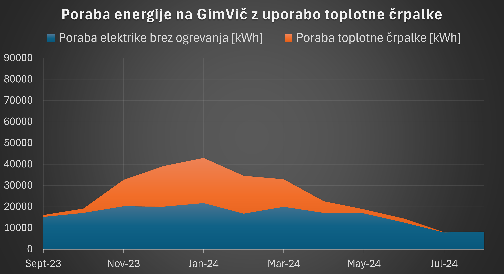
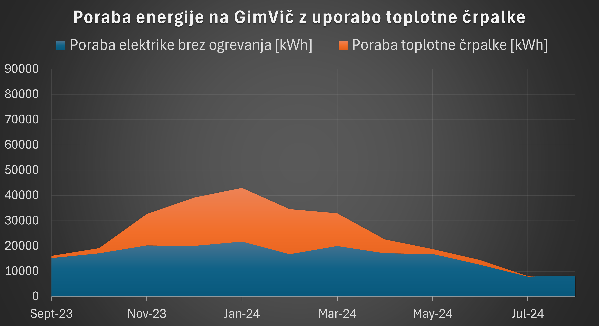

EN
EN
Ogrevanje prostorov
Uporaba pametnejših termostatov
Porabo plina lahko zmanjšamo z bolje regulirano temperaturo v prostorih. Ker imajo vse učilnice nastavljeno enako temperaturo radiatorjev, opažamo da je v določenih prostorih temperatura previsoka, zaradi česar pogosto odpremo okna v učilnicah.
To bi se lahko rešilo z inštalacijo radiatorskih termostatov ali kaj podobnega, v učilnicah. Tako bi preprečili previsoke temperature.
Uporaba prezračevalnega sistema
Včasih odpremo okna tudi zaradi slabega zraka v učilnicah. Tega se z spremembo temperature vode v radiatorjih ne da rešiti. Imamo pa na šoli že inštaliran centralni prezračevalni sistem (HVAC) v nekaterih učilnicah. Tak sistem bi lahko namestili v vse učilnice, saj bi hkrati omogočal prezračevanje in ogrevanje - bolj učinkovito izmenjevanje toplote med notranjim in zunanjim zrakom (zaradi izmenjevalnika toplote, skozi katerega gre zrak, ki zapušča zgradbo). Poleti pa bi seveda tudi omogočal hlajenje prostorov.
Uporaba toplotno črpalke
Pri projektu smo razglabljali o rešitvi tega problema in prišli do rešitve pri modernih sistemih toplotnih črpalk, tako plina praktično ne bi potrebovali. To bi pripomoglo k manjšem ogljičnem odtisu šole. Za to rešitev ni bilo možno najti konkretne primerjave, saj so toplotne črpalke tolikšne velikosti delo po naročilu in niso na voljo za fizične osebe.
Spodnja grafa prikazujeta porabo energije na Gimnaziji Vič z plinskim bojlerjem oziroma toplotno črpalko.
 

Po izračunu porabe energije s toplotno črpalko bi lahko porabili do 40% manj energije. (Uporabljen podatek: COP = 3). Kar pa bi prihranilo (samo) 20t emisij (ker ima trenutno elektrika večji ogljični odtis od zemeljskega plina, iz enakega razloga odsvetujemo namestitev električnega bojlerja).
>>Komentar: Vse zgoraj predlagane rešitve so združljive ena z drugo, torej lahko delujejo skupaj.